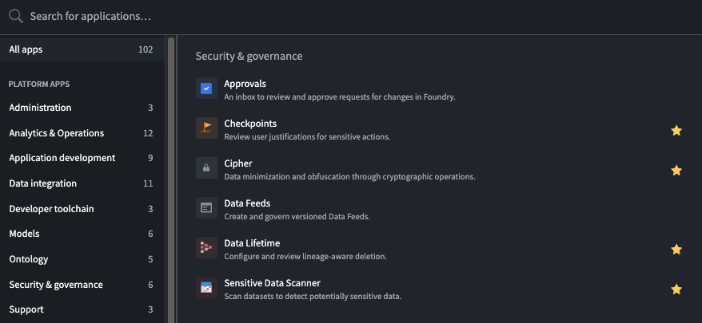

Start using Data Lifetime for your organization by following the best practices and guides listed in the sections below.
You can find the Data Lifetime application using the Applications search tool, located in the navigation sidebar to the left of your screen. Search by name, or find the application under Security & governance.

The following guides will explain specific workflows available in Data Lifetime:
The configuration of deletion policies is a critical and sensitive task that must be performed with care and accountability. Changes to deletion policies can cause significant impacts on data integrity, including accidental data loss or retaining data longer than legally allowed.
The Data Lifetime lineage-aware deletion solution is integrated into the robust access control system in the platform, allowing organizations the ability to restrict the privilege of policy application to specific trusted users. Moreover, applying override policies requires an even higher access level within this system.
Additionally, Data Lifetime can be integrated with Checkpoints, an application that allows organizations to require user justifications for actions in the platform. Applying Checkpoints to require justifications for applying or removing a deletion policy in Foundry can enhance data governance best practices by providing additional auditability and transparency.